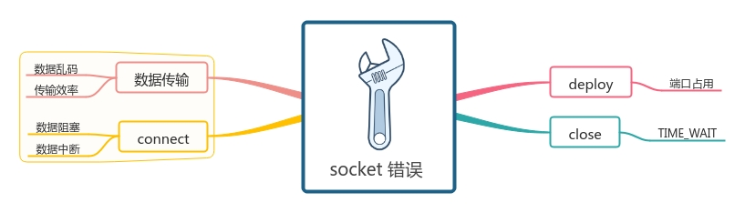

套接字错误处理
Table of Contents
1 套接字程序中遇到的错误

套接字编程中遇到的错误，可以通过发生的场景分为4部分，与前文的四步骤一一对应
1.1 部署时遇到的错误
1.1.1 地址已占用
关闭服务端套接字时，服务端所使用的端口状态还是 TIME_WAIT ，端口还在被占用
再次启动服务端程序时，会发现 address already in use
要解决这个问题，只需在服务端套接字 bind 前，
设置 SO_REUSEADDR 属性
int on = 1; setsockopt(sockfd, SOL_SOCKET, SO_REUSEADDR, &on, sizeof(on));
1.2 连接时遇到的错误

connect 与 accept 连接了两个套接字，这里看作两个套接字之间有一个管道将他们相连
那么遇到的问题可以分为
1.2.1 数据阻塞
数据传输的阻塞有可能是网络的问题，也有可能是电脑死机无法响应数据，
这个时候我们可以在对端为 read 设置超时时间
struct timeval tv; tv.tv_sec = 5; tv.tv_usec = 0; setsockopt(connfd, SOL_SOCKET, SO_RCVTIMEO, (const char *) &tv, sizeof tv);
也可以在轮询的时候设置超时，这里先不做探讨
然后我该怎么知道是发生了超时事件 ？？
此时/read/ 返回 -1， 并且 errno 为 EAGAIN 或 EWOULDBLOCK
tips
鬼知道这两个错误码什么意思，先用着好了
1.2.2 数据中断
此时维持双方数据传输的通道断裂，可能是由于程序崩溃引起的
此时在崩溃的一方，操作系统回收资源，自动调用 shutdown
若 数据发送端 没有崩溃，调用 write 时触发 SIGPIPE 信号，
此时返回值为 -1,并且 errno = EPIPE
若 数据接收端 没有崩溃， 调用 read 时会接收到 EOF 信号，返回值为 0
遇到这种情况只能先手动关闭连接了
tips
遇到 SIGPIPE 时，程序一般会退出，如果不想退出可以调用
signal(SIGPIPE, SIG_IGN); // SIG_IGN: signal ignore
1.3 传输数据时遇到的错误
1.3.1 数据乱码
不同的CPU有不同的字节序类型 这些字节序是指整数在内存中保存的顺序 这个叫做主机序
怕什么，整数的问题关我字节流什么事，直接把数据指针强制转化为 const char * 发送即可
send(connfd, (const char *)&data, sizeof(data), 0);
1.3.2 TODO 传输效率过低
要传输的数据量太小，就像澡堂里就一个人洗澡，老板得陪死
为了解决这个问题，我们可以用 writev 与 readv 函数来处理数据读写
这两个函数可以 聚集写 ， 散布读
#include <sys/uio.h> ssize_t readv(int fd, const struct iovec *iov, int iovcnt); ssize_t writev(int fd, const struct iovec *iov, int iovcnt);
但我好像不会用啊
1.4 关闭
好像没有诶